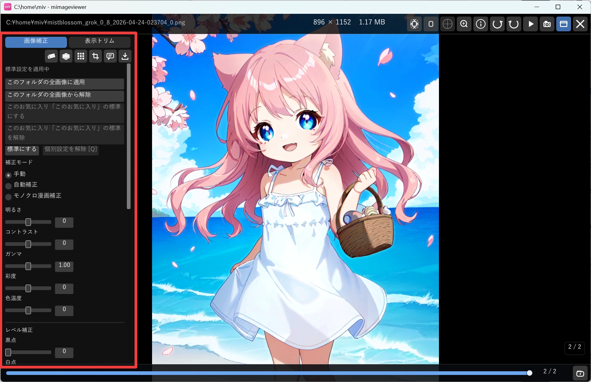
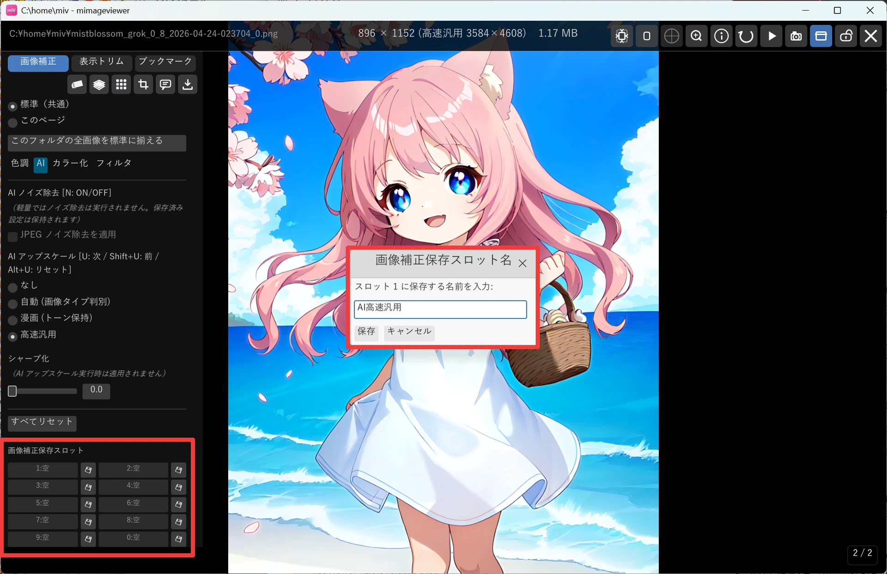
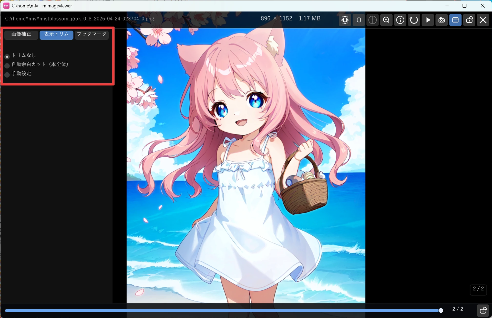

明るさ・色を補正する（＋表示トリム）
薄暗いスキャン画像を読みやすくしたり、写真の色味を整えたり、余分な余白を表示だけカットして中身を大きく見たり—— フルスクリーン表示中に画面左のパネルを開くだけで、画像全体にリアルタイムで補正をかけられます。 元のファイルは書き換えないので、気軽に触って好みの見た目を探せます。
補正パネルを開く
画像・ZIP 内画像・PDF ページをフルスクリーンで表示中に、画面の左端にマウスを寄せると画像補正パネルが現れます （右端は情報パネル、上端はホバーバーです）。「画像補正」タブでスライダーを操作します。 クリック表示モードにしている場合は、左端の呼び出しバーをクリックします。

スライダーで明るさ・色を整える
次のパラメータをスライダーで調整できます。動かすとすぐにプレビューへ反映されます。
| パラメータ | 範囲 | 効果 |
|---|---|---|
| 明るさ | -100〜+100 | 画像全体の明るさを調整 |
| コントラスト | -100〜+100 | 明暗の差を強調・抑制 |
| ガンマ | 0.2〜5.0 | 中間調の明るさを調整 |
| 彩度 | -100〜+100 | 色の鮮やかさを調整 |
| 色温度 | -100〜+100 | 暖色（赤み）↔ 寒色（青み）を調整 |
| 黒点 / 白点 | 0〜255 | レベル補正の入力範囲 |
| 中間点 | 0.1〜10.0 | レベル補正のガンマ |
スライダー右の「↩」ボタンで、そのパラメータだけをデフォルト値に戻せます。
補正モードを切り替える
パネル上部のラジオボタンで、手動調整以外の補正モードにも切り替えられます。
- 手動：上記のスライダーを自分で調整します
- 自動補正：ヒストグラムから黒点・白点を自動設定します
- モノクロ漫画補正：グレースケール化・紙色除去・黒強化・S 字カーブをまとめて適用し、漫画スキャンの読みやすさを底上げします
自動補正・モノクロ漫画補正を選んでいる間は、手動スライダーは無効になります。
標準設定と、ページ個別の補正
補正には この画像だけの個別設定 と、その場所の標準設定 の 2 段があります。 個別設定があればそれが優先され、無ければ標準設定が使われます。
パネル上部の 2 行のラジオが、いまスライダーがどちらに書き込まれるかを表します。 上段が標準（お気に入りで「標準を分ける」を ON にしていればそのお気に入りの標準、していなければ共通の標準）、 下段が「このページ」です。
お気に入り登録したフォルダの中では、上段の下に 「このお気に入り用に標準を分ける」 が出ます。 チェックを入れると、そのお気に入りだけの標準設定が生まれます。チェックした瞬間はそれまでの標準の内容を 引き継ぐので見た目は変わりません。外せば元の標準に戻ります。 お気に入りに登録しただけでは補正の効き方は変わらないので、安心して登録できます。
ラジオの下のボタンで、今の補正をどの範囲に反映するかを選べます（選んでいるスコープに応じて入れ替わります）。
- 共通の標準からコピー：共通の標準の内容を、このお気に入りの標準へ複製します
- 現在の設定値を標準に反映：今のページの補正値を、その場所の標準として保存します
- フォルダ全画像をこのページに揃える：今の補正値を、開いているフォルダ / ZIP / PDF の全ページへ個別設定として書き込みます（ファイル自体は書き換えません）
- このフォルダの全画像を標準に揃える：そのフォルダ / ZIP / PDF の全ページの個別設定を削除し、標準に戻します
- すべてリセット：いま選んでいる方（標準 / このページ）の補正値を、すべて初期値（補正なし）に戻します（このボタンだけスライダーの下にあります）
- 個別設定を解除：今のページの個別補正を消して標準に戻します（Q または Ctrl+Backspace）
「このページ」で 「すべてリセット」を使うと、そのページを補正なしにします。「個別設定を解除」は標準に従わせる操作なので、標準に補正が入っている場合は同じ結果になりません。
迷ったときの目安です。上段の「標準」を選んだまま、1 枚で気に入る補正を作り込みます。 その設定がそのまま標準になるので、他の画像を開いても同じ補正が効きます。 特定のフォルダだけに効かせたいなら、そのフォルダをお気に入りに登録して 「このお気に入り用に標準を分ける」にチェックを入れてから調整します。 先に「このページ」で作り込んでしまった場合は、「現在の設定値を標準に反映」で標準へ移せます。 補正を掛けすぎたときは、上段を選んでスライダー下の「すべてリセット」で補正なしへ戻せます。
保存スロットに保存して呼び出す
気に入った補正の組み合わせは、10 個の名前付きスロットに保存しておけます。別のフォルダを開いたときも、 同じ補正をすぐに呼び出せます。
- パネル下部の 💾 ボタンで保存ダイアログを開き、スロット名を付けて保存します
- Ctrl+1〜9 / Ctrl+0 でスロット 1〜10 を適用します
- フルスクリーン表示中：今開いているページに適用（＝そのページの個別設定になります）
- サムネイル一覧：チェック済みの画像があれば一括適用、なければカーソル位置の 1 枚に適用

表示トリム（読むための余白カット）
パネル上部の「表示トリム」タブ（「画像補正」の隣）に切り替えると、画像まわりの余白を 表示だけカットして中身を大きく表示できます。スキャン漫画の白い縁や、周囲に余白の多い イラストを読むときに便利です。切り方は次の 4 つから選べます。
| モード | 効果 |
|---|---|
| トリムなし | 余白を切らずそのまま表示します（初期状態） |
| 自動余白カット（本全体） | 画像の周囲の単色余白を自動で検出して切り、中身を画面いっぱいに表示します。余白量はページごとに検出されます |
| 手動設定 ＋ 適用範囲「本全体」 | 今開いている本（フォルダ / ZIP / PDF）の全ページに、手動で決めた余白量をまとめて効かせます。見開き表示では左右ページを別々に調整することもできます |
| 手動設定 ＋ 適用範囲「このページ」 | 今開いているページ用の余白量を保存します。一度決めると、次にそのページを開いたときも同じ余白が自動的に使われます。「本全体」を選ぶと個別設定を解除できます |

- 表示トリム（このページで紹介）：読みやすくするための表示専用の余白カット。元画像も、保存・エクスポートした画像も一切変わりません。
- 加工用の切り取り：実際に画像を切り出して出力に反映する切り取り。エクスポート（Ctrl+E）やキャプチャ保存（Ctrl+S）で切り出した画像を書き出せます。消しゴム・隠蔽加工・テキスト注釈などと並ぶ加工機能の一つで、加工の流れとあわせて別ページで紹介します。
キー操作の早見表
| キー | できること |
|---|---|
| Q / Ctrl+Backspace | 今のページの個別補正を解除して標準値に戻す |
| U | AI アップスケールモデルをサイクル切替 |
| N | AI ノイズ除去の ON / OFF を切替 |
| Ctrl+1〜9 / Ctrl+0 | 保存スロット 1〜10 を今のページに適用 |
| Ctrl+Alt+1〜9 / Ctrl+Alt+0 | 保存スロット 1〜10 をその場所の標準へ読み込み、今のページの個別設定を解除 |
| Ctrl+E | 補正・加工（加工用の切り取り含む）を反映してエクスポート（書き出し） |
| Ctrl+S | 補正・加工を反映してキャプチャ保存フォルダへ保存 |